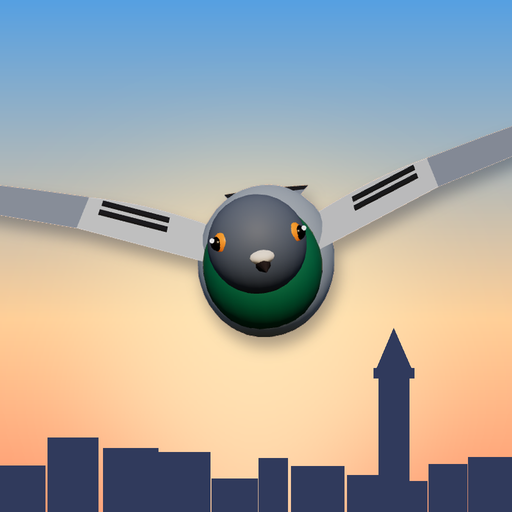

Güvercin Simülatörü
Güvercin ol, gün batımında şehrin üstünde uç, kargonu bırak, hedefi tuttur. Her gün 4 ücretsiz uçuş.
Be a pigeon, fly over a sunset city, drop your cargo and hit the target. 4 free flights every day.
Destek / Support
Soru ve sorunlar için / For questions and problems: ugurdenizyavuz1@gmail.com
Gizlilik Politikası / Privacy Policy
Oyundaki şehir, kişiler ve olaylar hayalidir. The city, people and events in the game are fictional.